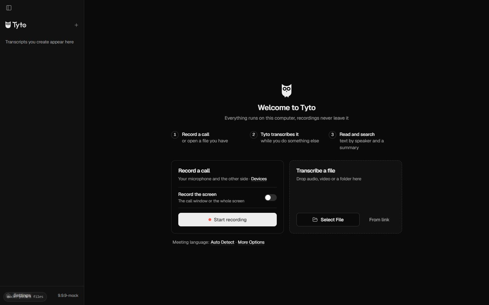
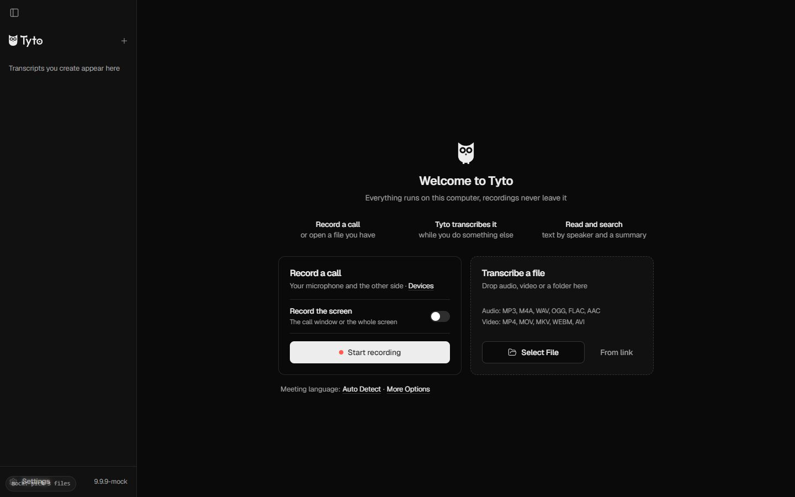
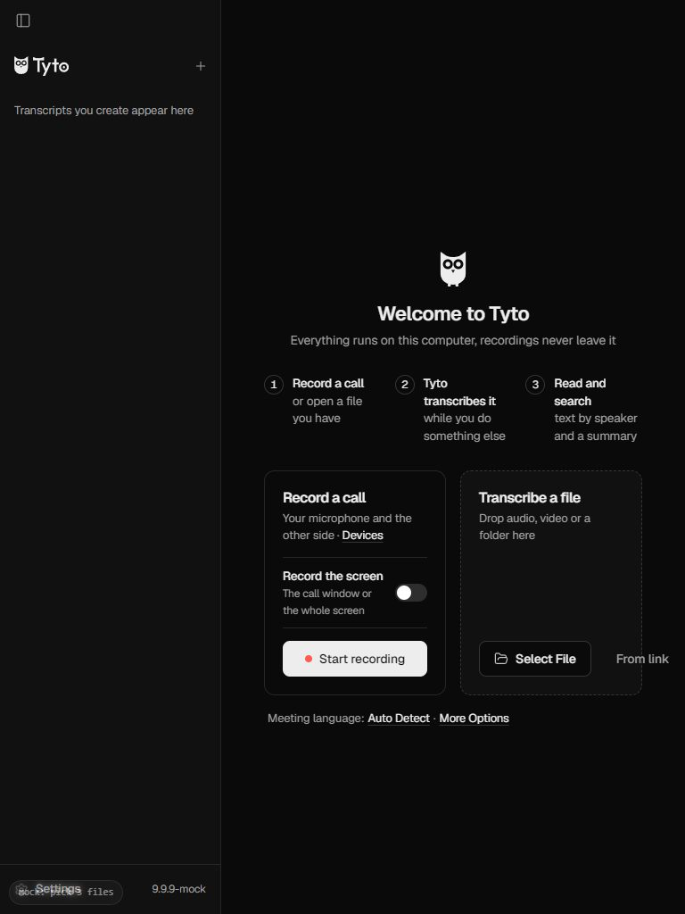
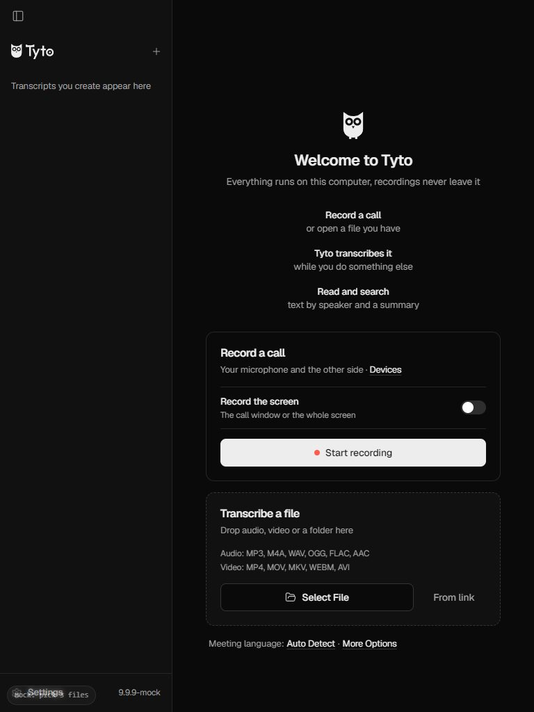

Главное окно Tyto: до и после правок
Первый запуск, браузерный режим (поэтому текст английский). Слева до замечаний Taste и UI/UX Pro Max, справа после.
Широкое окно, 1440 px


Узкое окно, 768 px
Близко к минимальному окну Tyto (800 px), когда левая колонка открыта.


Что еще поменялось, но здесь не видно
- Левая колонка. Справа от названия снова длительность записи, у нерасшифрованных серая точка. В браузерном режиме записей нет, поэтому колонка пустая.
- Полная строка записи («10:02 · 48 мин · Не расшифровано») входит в название кнопки, ее прочитает экранный диктор.
- Проверка Taste: было 1 ошибка и 3 предупреждения, стало 0 ошибок и 2 допустимых предупреждения.